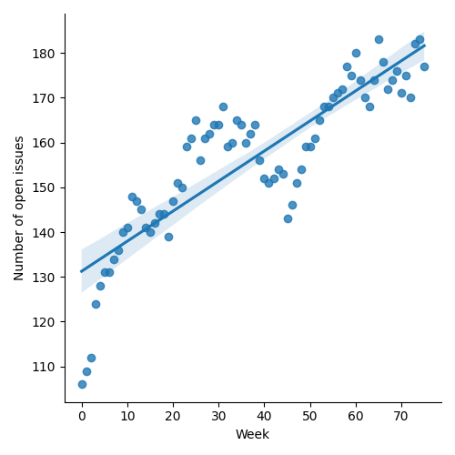

QT4 CG Meeting 066 Minutes 2024-02-20
Table of Contents
- Draft Minutes
- Summary of new and continuing actions
[0/10] - 1. Administrivia
- 2. Technical Agenda
- 2.1. PR #1023: 1020 explain consequences of function coercion
- 2.2. PR #1022: 999 Allow comments in regular expressions
- 2.3. PR #1028: 960(partial) Recognize alternative representation of JSON null
- 2.4. PR #953: 617 Define record constructors
- 2.5. PR #916: 720 Allow methods in maps with access to $this
- 2.6. PR #832: 77 Add map:deep-update and array:deep-update
- 2.7. PR #1008: 1002 Add fn:take-while function (replacing subsequence-before)
- 2.8. PR #1027: 150 fn:ranks
- 3. Any other business
- 4. Adjourned
Meeting index / QT4CG.org / Dashboard / GH Issues / GH Pull Requests
Draft Minutes
Summary of new and continuing actions [0/10]
[ ]QT4CG-052-02: NW to consider how to schedule an “editor’s meeting”[ ]QT4CG-056-04: MK to write a proposal for adding a select attribute to xsl:text[ ]QT4CG-058-02: MK to consider providing more advice about the pitfalls of mixing decimal and double when sorting[ ]QT4CG-063-01: MK to revise #956 especially with respect to the options parameter[ ]QT4CG-063-02: JK to consider whether the roman numeral example is appropriate for the spec.[ ]QT4CG-063-04: NW to try to add test review to the editorial meeting.[ ]QT4CG-063-05: MK to revise PR #953 to take account of CG’s comments[ ]QT4CG-063-06: MK to consider refactoring the declare item type syntax to something like declare record[ ]QT4CG-064-08: NW to open an issue to try to resolve $search to $target consistently.[ ]QT4CG-065-01: CG to amend PR #795 to address MK’s comment re: implementation defined behavior[ ]QT4CG-066-01: MK to add a note that the grammar rules for regular expressions apply after comments are removed
1. Administrivia
1.1. Roll call [8/13]
Regrets: JLO, EP
[X]Reece Dunn (RD)[X]Sasha Firsov (SF)[X]Christian Grün (CG)[X]Joel Kalvesmaki (JK) [:07-][X]Michael Kay (MK)[ ]Juri Leino (JLO)[X]John Lumley (JLY)[X]Dimitre Novatchev (DN)[ ]Wendell Piez (WP)[ ]Ed Porter (EP)[ ]Adam Retter (AR) [:10-][ ]C. M. Sperberg-McQueen (MSM)[X]Norm Tovey-Walsh (NW). Scribe. Chair.
1.2. Accept the agenda
Proposal: Accept the agenda.
Accepted.
1.2.1. Status so far…

Figure 1: “Burn down” chart on open issues

Figure 2: Open issues by specification

Figure 3: Open issues by type
1.3. Approve minutes of the previous meeting
Proposal: Accept the minutes of the previous meeting.
Accepted.
1.4. Next meeting
The next meeting is scheduled for Tuesday, 27 February 2024.
Any regrets for the next meeting?
1.5. Review of open action items [9/18]
[ ]QT4CG-052-02: NW to consider how to schedule an “editor’s meeting”[ ]QT4CG-056-04: MK to write a proposal for adding a select attribute to xsl:text[ ]QT4CG-058-02: MK to consider providing more advice about the pitfalls of mixing decimal and double when sorting[ ]QT4CG-063-01: MK to revise #956 especially with respect to the options parameter[ ]QT4CG-063-02: JK to consider whether the roman numeral example is appropriate for the spec.[ ]QT4CG-063-04: NW to try to add test review to the editorial meeting.[ ]QT4CG-063-05: MK to revise PR #953 to take account of CG’s comments[ ]QT4CG-063-06: MK to consider refactoring the declare item type syntax to something like declare record[ ]QT4CG-064-08: NW to open an issue to try to resolve $search to $target consistently.[ ]QT4CG-065-01: CG to amend PR #795 to address MK’s comment re: implementation defined behavior
1.6. Review of open pull requests and issues
1.7. Review of open pull requests and issues
1.7.1. Merge without discussion
The following PRs are editorial, small, or otherwise appeared to be uncontroversial when the agenda was prepared. The chairs propose that these can be merged without discussion. If you think discussion is necessary, please say so.
Proposal: merge without discussion.
Approved.
1.7.2. Close without action
It has been proposed that the following issues be closed without action. If you think discussion is necessary, please say so.
- Issue #1005: regular expressions - whitespace
- Issue #709: (Un)Checked Evaluation
- Issue #459: Eager and lazy evaluation
- Issue #356: array:leaves
- Issue #135: Arrays' counterparts for functions on sequences, and vice versa
- Issue #94: Functions that determine if a given sequence is a subsequence of another sequence
- Issue #43: Support standard and user-defined composite values using item type definitions
Proposal: close without action
Accepted.
2. Technical Agenda
2.1. PR #1023: 1020 explain consequences of function coercion
See PR #1023
Mike suggests we should give this one a quick review.
- MK: In 3.8.2 Function Coercion in XQuery…
- … It’s always been true that you apply the coercion rules whether you need to or not.
- … It turns out that function conversion isn’t a no-op in that case. It’s illustrated in a couple of examples in the spec.
MK walks through the example.
- MK: The coerced function will check that the argument is the right type, this
is a small backwards incompatibility because we previously didn’t check the
argument types.
- … I think this is a case where the backwards incompatibility is reasonable, it’s doing what the user would expect.
- JLY: This is a consequence of the contravariance.
- MK: Yes.
Proposal: Accept this PR.
Accepted.
2.2. PR #1022: 999 Allow comments in regular expressions
See PR #1022
- MK: I think this is pretty straight-forward. But do we want to do it in the particular way described?
MK reviews the details: you can escape # because it’s used for comments…and
you can use it for comments
- MK: For compatibility reasons, we have to introduce a new flag for it.
- … It’s similar to comment syntaxes in other languages but we’re constrained by attribute value normalization.
- MSM: Was using XQuery and XPath comment syntax considered?
- MK: I considered it before doing it this way! It doesn’t work because “):” already means something.
- RD: There’s a capturing group that starts with a colon.
- JK: For clarification, applying this with flags means that no changes need to be made to what a valid regex is.
- MK: I haven’t attempted to change the grammar for regular expressions; we didn’t do that when we added whitespace.
ACTION: MK to add a note that the grammar rules for regular expressions apply after comments are removed
Proposal: merge this PR.
Accepted.
2.3. PR #1028: 960(partial) Recognize alternative representation of JSON null
See PR #1028
- MK: This addresses part of the issue of the lookup operator flattening
sequences. The issue is that when you search a structure of maps and array
using the lookup operator. Normally when you parse JSON, the leaves are all
singletons. The exception is that the JSON
nullvalue gets turned into an empty sequence which means they get lost.- … That’s fine when you’re using it for the value of a property that means the same thing as the property being absent, then it becomes difficult to do the searching.
- MK: What this proposes is that you can choose a different representation for
nullwhen you parse JSON.- … The
"null"option can be set to any value and that value will be used in the XDM when you hit a JSONnull. - … There’s an example that shows this using a magic QName (
fn:null) that has the feature that it’s recognized by the serializer (in the JSON output method).
- … The
- RD: In the serializer, should we have an option to say what the
nullvalue is? - MK: The problem is that you have to deal with equality or a node or a deep map or any number of things. It just gets a bit complicated.
- RD: So should the parse option just allow
fn:nullthen? - MK: There’s some logic there, but you might legitimately want to use -1 or 0. They won’t want it serialized back to null.
- RD: That will also allow compatibility with JSONiq which uses a special object.
- DN: Is this true for any occurrence of
fn:null, not just ones that came from parse json? - MK: yes.
- MSM: I like allowing the user to specify any value they want, but I wonder if
a keyword value like
fn:nullmight be a little simpler than constructing a QName. A keyword would be a little easier to type thanxs:QName('fn:null')- … I wonder if the trade off is worth considering?
- JLY: How often are people going to be doing this? Is going to be frequent enough to warrant a workaround?
- MK: I think it’s a fairly infrequent requirement.
- CG: I’d prefer a binary choice here, not an open user choice.
- JLY: This is the only QName that can occur from parse-json, right?
- MK: Yes.
- JLY: Could the integer parse function produce a QName?
- MK: … Maybe!
Proposal: Accept this PR?
Accepted.
2.4. PR #953: 617 Define record constructors
See PR #953
MK introduces the PR.
- MK: This interacts with other proposals, but let’s look at its current state
and see where we get to.
- … It’s defined mostly in the constructor functions section of F&O.
MK reviews the prose in 20.6. It’s also mentioned in XQuery and XSLT where you declare item types.
- MK: I had an action to try to simplify the syntax for declaring record types.
- … There have also been suggestions for adding support for defaults values.
- … Hopefully we can extend this in the feature.
- JK: The constructor functions are built during static analysis.
- MK: Yes, it’s equivalent to having the declare function immediately after the declare type.
- MK: Let’s look at the XSLT case where there’s also import precedence to
consider.
- … We see immediate simplification in the complex number example.
- … In fact, you aren’t creating an XSLT function, so import precedence doesn’t come into play.
- JK: We should make sure there are tests that use use-when and other things that impact the static context.
- RD: The reasons we’re using “record test” (instead of “record type”) is because it’s defined in sequence item type matching.
- MK: And that’s because they’re used in node tests in axis expressions; that’s the history.
Some discussion of how attempting to support the name “record type” might impact the spec. MK has been trying to separate those parts in the specification.
Some discussion of defaults. Adding them to the record test would be nice, but there’s a risk that users will misunderstand that it’s only for the constructor function.
Proposal: accept this PR
Accepted.
2.5. PR #916: 720 Allow methods in maps with access to $this
See PR #916
This proposal is overtaken by events. It has been closed.
2.6. PR #832: 77 Add map:deep-update and array:deep-update
See PR #832
Not ready for discussion. Need to finish the specification on pinned and labeled values first.
2.7. PR #1008: 1002 Add fn:take-while function (replacing subsequence-before)
See PR #1008
- MK: This fills in a gap in subsequence functions. It’s the common case of all
of the items from the beginning of a sequence up to the one that satisfies an
expression.
- … It’s a functional way of getting what the while clause does on FLOWR.
- JLY: Isn’t the function required to be a boolean?
- MK: I assume that we’re going to adopt the proposal to use EBV for predicates.
- CG: Shouldn’t we have
drop-whileas well? All the languages I know of that havetake-whilealso havedrop-while - NW: Is it findability or user expectations?
- RD: Could we have an example of implementing a
drop-while? Didn’t we have example somewhere? - MK: We’ve dropped the appendix of user-written functions
- NW: I think the parity of functions is important for useability.
- DN: Isn’t this sometimes called
skip-while? - CG: Yes, it’s sometimes called that.
- RD: Could we at least add an example of how to implement drop-while in the section on take-while?
- MK: We can certainly do that.
- CG: I added an example in the pull request.
Porposal: Accept this PR.
Accepted.
2.8. PR #1027: 150 fn:ranks
See PR #1027
There isn’t time to complete this item today; we’ll start with this issue next week.
DN offers an overview of the ideas in the proposal.
- MK: There’s some complexity here with respect to removal of duplicates. Would it be simpler to keep the duplicates?
- DN: This corresponds to the SQL definition of ranking; this is the semantic that users would expect.
3. Any other business
None heard.